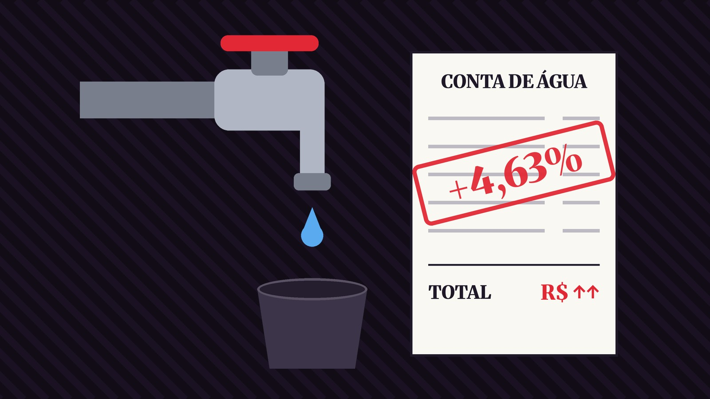

Gravataí · Cidade
965 faltas de água e dois aumentos em seis meses: o saneamento que Gravataí entregou à Aegea
A conta da Corsan sobe 4,63% em janeiro, uma semana depois de mais uma falta de água. O Sob Vigia relembra como a cidade entregou o saneamento à empresa privatizada, e quem assinou embaixo.
Sob Vigia
26 DE NOV DE 2026, 13:37
Foto: (Arte: Sob Vigia)
Tem uma coisa que nunca falta em Gravataí: reajuste da Corsan.
A Agência Estadual de Regulação dos Serviços Públicos Delegados do RS (Agergs) aprovou um aumento de 4,63% nas tarifas de água e esgoto da Corsan, que vale a partir de 1º de janeiro de 2027. O percentual corresponde à inflação (IPCA) acumulada entre novembro de 2025 e outubro de 2026. A Corsan chegou a pedir 4,77%.
É o segundo aumento aprovado em menos de seis meses. Em junho, quando aprovou a tarifa social, que dá 50% de desconto para famílias de baixa renda do CadÚnico, o Conselho Superior da Agergs autorizou também um reajuste extraordinário de 5,76% para os demais consumidores. Para quem não tem a tarifa social, os dois aumentos somados chegam a cerca de 10,7%.
Na decisão de agora, a Agergs ainda encontrou diferenças entre as tabelas de preços enviadas pela Corsan e os cálculos da equipe técnica da agência, e mandou a empresa detalhar as informações. Nem o reajuste veio sem defeito.
A água, essa sim, falta
A notícia chega uma semana depois de mais um apagão nas torneiras. O rompimento de uma tubulação de grande porte deixou moradores de algumas localidades de Cachoeirinha quatro dias sem água, e o abastecimento em Gravataí e Cachoeirinha voltou aos poucos.
Não foi um caso isolado. A CPI aberta neste ano pela Câmara de Vereadores, a pedido do vereador Hiago Pacheco (PP), registrou 965 episódios de interrupção no abastecimento de Gravataí em 2025 e 2026, com base em dados da própria Corsan. O relatório final, aprovado por unanimidade pelos membros da comissão, cita uma multa de R$ 26.946,60 aplicada à empresa por não cumprir a pressão mínima na rede e traz 19 recomendações. Os problemas se concentram em interrupções recorrentes, cobranças questionadas e obras mal feitas, com ruas mal recompostas.
Antes da aprovação, a votação do relatório chegou a ser adiada por um pedido de vista do líder do governo Zaffalon na Câmara, o vereador Alex Peixe (PSDB).
Como chegamos até aqui
2018: a PPP do esgoto. O então prefeito Marco Alba (MDB) enviou à Câmara a adesão de Gravataí à parceria público-privada (PPP) da Corsan para o esgoto da Região Metropolitana. A promessa: levar a cobertura de esgoto de Gravataí e Cachoeirinha a 87,3% em até 11 anos, com investimentos da Corsan e do parceiro privado. Em troca, o contrato da companhia com o município poderia ser prorrogado por 37 anos.
Em 26 de abril de 2018, a Câmara aprovou a adesão sem nenhum voto contrário. Segundo a Corsan, foram 18 votos a favor e uma abstenção. A abstenção foi do vereador Dilamar Soares (PDT), que apoiava a PPP mas queria uma cláusula que permitisse romper o contrato caso a Corsan fosse privatizada. Ninguém deu ouvidos.
A PPP foi a leilão no ano seguinte, e quem venceu foi o grupo Aegea.
2021: a porta para a privatização. Em 2021, a Assembleia Legislativa dispensou o plebiscito para a venda da Corsan, e o governo Eduardo Leite precisou que os municípios assinassem aditivos aos contratos. Antes disso, o próprio governo Zaffalon chegou a ameaçar romper com a Corsan: um grupo de trabalho da prefeitura concluiu que o modelo de concessão não funcionava para Gravataí.
Não durou. Em 9 de novembro de 2021, no Palácio Piratini, ao lado de Leite, Zaffalon assinou o protocolo de intenções do aditivo que prorrogava o contrato de Gravataí com a Corsan. O documento abria caminho para o Estado negociar a venda da companhia. O prefeito disse que assinou para garantir os investimentos necessários à universalização do saneamento.
2022 e 2023: a venda. Em dezembro de 2022, a Corsan foi arrematada pela mesma Aegea, por R$ 4,15 bilhões. O contrato de venda foi assinado em julho de 2023. Com a "nova Corsan", a prefeitura assinou o aditivo definitivo: segundo a companhia, R$ 407 milhões em investimentos em Gravataí, R$ 155 milhões deles em esgoto, e universalização até 2033. A Corsan também anunciou, na época, que as tarifas ficariam estáveis até 2027, com reajuste só pela inflação.
2026: a conta. Falta água, sobram interrupções, e a tarifa sobe duas vezes no mesmo ano. Hoje, parte dos vereadores que cobram explicações da empresa na CPI apoiou, direta ou indiretamente, o caminho que levou à privatização.
Fontes
- Agergs: reajuste de 4,63% para 2027 (noticiado por Agora RS, Folha do Mate e outros veículos, novembro de 2026).
- Governo do RS: tarifa social e reajuste extraordinário de 5,76% aprovados pelo Conselho Superior da Agergs (junho de 2026).
- Relatório final da CPI AEGEA/CORSAN 1/2026, Câmara Municipal de Gravataí (conforme Seguinte, O Repórter e Giro de Gravataí).
- Corsan e AESBE: aprovação da PPP pela Câmara de Gravataí (abril de 2018); aditivo contratual com o Município de Gravataí.
- RED: abstenção do vereador Dilamar Soares na votação da PPP.
- Seguinte e 2M Notícias: protocolo de intenções assinado por Luiz Zaffalon no Palácio Piratini (novembro de 2021).
- Portal Saneamento Básico: ameaça de rompimento do contrato pela Prefeitura de Gravataí.
- Sul21 e Governo do RS: leilão (dezembro de 2022) e contrato de venda da Corsan (julho de 2023).
Leia também
- Chega: servidores de Gravataí aprovam indicativo de greve por tempo indeterminado a partir de 1º de dezembro
- Descolado da realidade: vereador que votou pelo parcelamento do 13º dos professores propõe meritocracia e levar aluno à NASA
- Aula de empreendedorismo toma o lugar de outras disciplinas em Cachoeirinha, relatam professores; programa já custou R$ 2,4 milhões